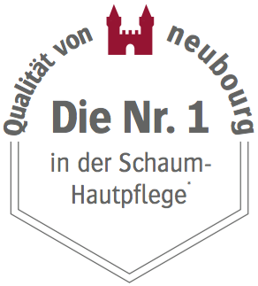

Die Allpresan® Philosophie
Wir haben uns vor vielen Jahren aufgemacht, die Fußpflege
mit einer neuen Darreichungsform zu revolutionieren. Unsere
Schaum-Cremes erfreuen sich seitdem einer hohen Beliebtheit,
denn neben ihrer hohen Wirksamkeit zeichnen sie
sich auch durch hohen Anwendungskomfort aus. Gerade ihr
schnelles Einziehen wird von den Anwendern immer wieder
hervorgehoben und hat selbst aus „Pflegemuffeln“ echte
„Pflegefans“ gemacht.

* Pflegende Fußpflege, Offizin + VH, Darreichungsform:
Schaum – Top Marken, Quelle: Insight Health GmbH & Co. KG, Januar 2015
Unsere Produkte entwickeln wir tagtäglich weiter, um sie
immer wieder auf ein neues Level zu bringen. Am Ende zählt
nur eins: Die Zufriedenheit und das Wohlbefinden unserer
Kunden. Dabei wollen wir für jede Person die passende
Fußpflege anbieten – ganz gleich ob jung oder alt, gesund
oder krank, sportbegeistert oder beauty-bewusst.
Deshalb denken wir stets über neue Anwendungsbereiche und neue Wirkungsgrade
nach, um nicht nur bei den strapazierten Füßen
dieser Welt, sondern bei jedem Hautproblem und jeder
Hautkrankheit das richtige Produkt parat zu haben. Grundlage
dafür bilden eigene Technologien, die so einzigartig
sind, dass für sie weltweit Patente erteilt wurden.
Wirksame Fußpflege ist unser Antrieb.